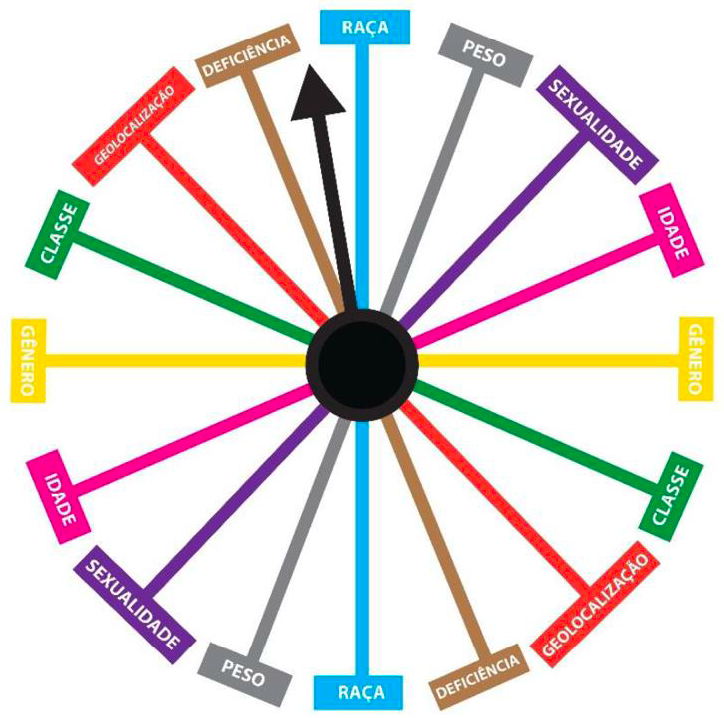
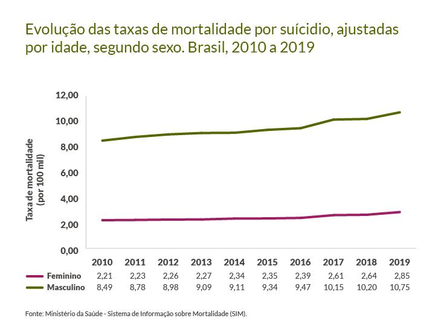
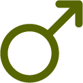

Módulo 1 Saúde Mental de Jovens Indígenas
A interseccionalidade é uma forma de entender melhor os problemas enfrentados por diversos grupos sociais (mulheres, crianças, adolescentes, pessoas idosas, pessoas com deficiência, população negra, LGBTQIAP+, migrantes, pessoas em situação de pobreza, refugiados/as, povos indígenas, entre outros).
Vamos assistir a um vídeo com Francyslane Vitória da Silva (enfermeira pela UFRJ-Macaé, especialista em Saúde da Família com ênfase na saúde da população do campo pela Fiocruz-Brasília e mestranda em Trabalho, Saúde, Ambiente e Movimentos Sociais) falando sobre interseccionalidade.

Como vimos no vídeo, esse conceito foi criado por Kimberlé Williams Crenshaw, defensora negra dos direitos civis norte-americana, sendo uma das principais estudiosas da teoria crítica da raça.
Então, para entender o que seria interseccionalidade, precisamos pensar que fazemos parte de diversos grupos sociais. Por exemplo, uma mulher pode ser portadora de alguma deficiência e viver em situação de pobreza. Assim, ela pode sofrer discriminações envolvendo o fator de ser mulher em uma sociedade machista, assim como dificuldades enfrentadas por estar em situação de pobreza e poder ter uma deficiência.
A interseccionalidade nos ajuda a entender que essas dificuldades, violências e problemas enfrentados podem ser um cruzamento do classismo (preconceito de classe), sexismo (preconceito vinculado ao sexo feminino) e capacitismo (preconceito relacionado à deficiência). Além disso, a interseccionalidade nos ajuda a planejar nossas ações nas políticas de saúde respeitando e entrecruzando as diversas características dos grupos sociais (CRENSHAW, 2002, p.177)
Abaixo, nós temos um diagrama para nos ajudar a entender algumas das intersecções presentes nos diferentes círculos que representam determinados grupos sociais. As intersecções entre os círculos representam esse cruzamento entre os grupos sociais.
Roleta Interseccional: proposta metodológica para estudos em comunicação

Disponível em: https://doi.org/10.30962/ec.2198
Veja a ativista Kimberle Crenshaw falando de interseccionalidade
Fonte: Youtube
Enxergando a saúde mental a partir da perspectiva interseccional, nós podemos apontar que existem características específicas nas pessoas que têm sua saúde mental afetada e vivenciam sofrimento psíquico.
Por exemplo, de acordo com informações do Governo Federal, a diferença entre os sexos configura um fator marcante no risco de suicídio, uma vez que, globalmente, homens apresentam um maior risco de morte por suicídio em relação às mulheres. Não obstante, mulheres apresentam maiores prevalências de ideação e tentativas de suicídio.

Entre mulheres, a taxa de mortalidade por suicídio no Brasil em 2019 foi de 2,9%.
Comparando os anos de 2010 e 2019, verificou-se um aumento de 29% nas taxas de suicídios de mulheres.

Homens apresentaram um risco 3,8 vezes maior de morte por suicídio que mulheres.
Entre homens, a taxa de mortalidade por suicídio em 2019 foi de 10,7 por 100 mil.
Nos anos de 2010 e 2019, verificou-se um aumento de 26% nas taxas de suicídios entre homens.
Um eixo central para entender a interseccionalidade deve ser as cosmologias. Os povos indígenas tem dinâmicas culturais, modos de vida e relações com o mundo de forma única. Uma forma ilustrativa de entender a interseccionalidade seria entender os povos indígenas em contexto de migração.